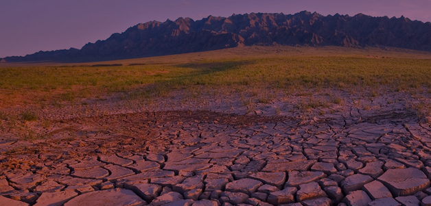

Опустынивание - тоже не простая, а сложная штука, которая несет за собой некоторые последствия, но об низ позже. Фактически, это то же самое, что и деградация земель, на территория, подвергшихся опустыниванию, невозможно, без необходимой обработки земли, выращивать какую-либо культуру. Поэтому вам, наверное, понятно, почему это является проблемой :)
Не смотря на то, что в Беларуси эта проблема не выражена ярко, ее все равно стоит упомянуть, согласитесь. Поэтому последствия опустынивания в экологическом и экономическом отношении очень существенные и почти всегда отрицательные. Уменьшается производительность сельского хозяйства, сокращаются разнообразие видов и количество животных. Организация Объединённых Наций в 1995 году установила Всемирный день борьбы с опустыниванием и засухой, затем провозгласила 2006 год международным годом пустынь и опустынивания, а в дальнейшем обозначила период с января 2010 года по декабрь 2020 года Десятилетием ООН, посвящённым пустыням и борьбе с опустыниванием.

В первую очередь, чтобы решить эту проблему, следует оптимизировать использование природных ресурсов, оптимизировать структуры сельскохозяйственных угодий, специализировать хозяйства, совершенствовать структуры посевных площадей.
Таким образом, опустынивание почвы – это актуальная экологическая проблема современности. Конечно, нам известны многие пустыни на планете, которые появились множество тысячелетий назад. Если не принимать меры, то мы рискуем, что вскоре все континенты планеты укроются пустынями, и жизнь станет невозможной. Чем интенсивнее происходит сельскохозяйственная и промышленная активность людей, тем быстрее случается опустынивание. Остается только гадать, через сколько лет и где появится новая пустыня на планете.